LoadRunner之VuGen
目标
1. 掌握VuGen的使用流程
一、VuGen介绍
说明：VuGen（Virtual User Generator）录制客户端和服务器之间的相关交互活动，它将自动生成相关模拟
实际情况的API（Application Programming Interface）函数。
提示：
1. LR录制脚本功能由于兼容性问题，非常不好使，所以我们平时在工作中也不建议使用录制的方式；
2. 由于兼容性问题和录制会产生多余的操作，因此一般都是手写脚本；
3. 为了更好的学习VuGen，我们基于LR11自带的订票系统为案例，练习使用VuGen。
案例1
需求：1. 录制机票网站的登录、退出脚本
使用：
1. 启动网站服务程序
2. 访问地址：http://127.0.0.1:1080/WebTours/
3. 登录账户：用户名：jojo 密码：bean
【案例】-启动服务程序
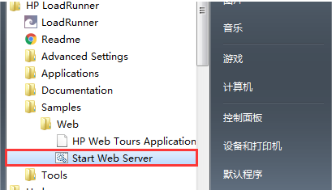
位置：开始菜单 -> HP LoadRunner -> Samples -> Web -> Start Web Server
提示：WebTours项目默认使用1080端口，如果启动失败，看是否端口被占用或者是否有权限；
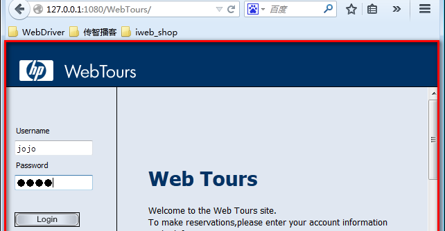
启动成功界面
二、案例1-实施步骤分析
1. 启动VuGen
2. 创建脚本
3. 选择录制协议 Web(HTTP/HTML)【重要】
4. 录制设置
5. 脚本录制
6. 运行脚本
2.1 启动VuGen
1. 方式一：直接运行VuGen图标启动【推荐】
2. 方式二：通过LoadRunner管理器启动
方式一 直接运行VuGen
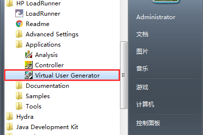
开始菜单 -> HP LoadRunner -> Applications -> Virtual User Generator
方式二 通过LoadRunner管理器启动
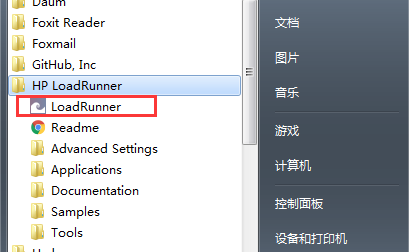
开始菜单 -> HP LoadRunner -> LoadRunner
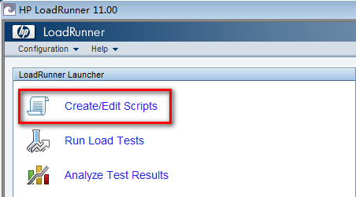
点击：Create/Edit Scripts
2.2 创建脚本
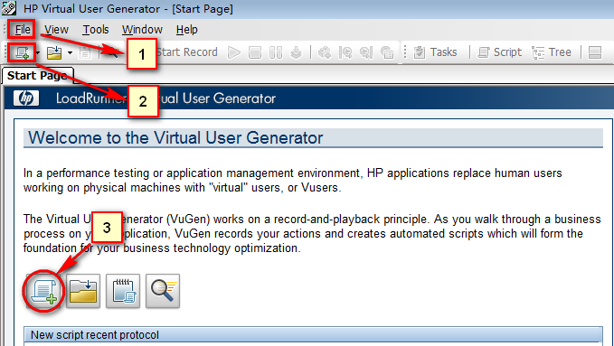
1. 菜单栏(File) -> New 快捷键（Ctrl + N）
2. 常用工具栏 -> 第一个图标新建
3. Start Page：点击快捷创建脚本图标(new Script)【推荐】
2.3 选择协议
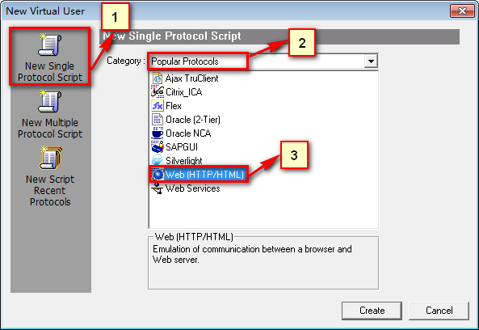
1. New Single Protocol Script:单一协议
2. Popular Protocols:主流协议
3. Web(HTTP/HTML):HTTP协议【选择】
2.4 录制设置
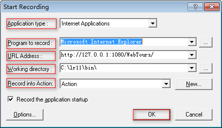
1. Application type:Internet Applications【选择】(Internet Applications:HTTP协议使用)
2. Program to record:选择浏览器
1). IE8：(提示：64位操作系统必须选择32位IE8!)【选择】
2). 火狐浏览器v24版本；
3. URL Address:http://127.0.0.1:1080/WebTours/(项目网址)
4. Working directory:工作目录（默认即可）
5. Record into Action:录制脚本存放的计划名
1). vuser_init:首先执行；迭代运行时候，只会运行一次
2). Action:可迭代运行、可新增【选择】
3). vuser_end:最后执行；迭代运行时候，只会运行一次
6. 点击OK -> 开始录制
2.5 脚本录制
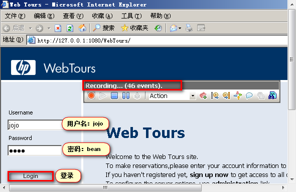
1. Recording...(xxx events):录制事件
2. 用户名：jojo 密码：bean
3. 点击Login
4. 点击Sign Off退出登录
5. 停止录制
6. 生成脚本
退出登录
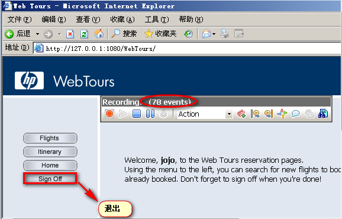
停止录制
生成脚本
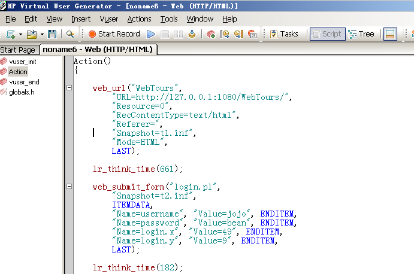
2.6 运行(回放)脚本
为什么要运行脚本？
说明：验证录制脚本是否能正常运行；
如何运行脚本？
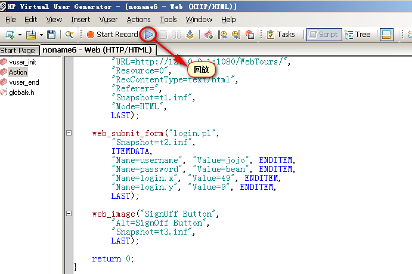
1. 点击 Run 按钮
2. 快捷键：F5键
怎么查看回放脚本的运行结果？
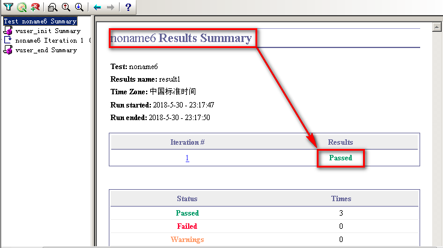
菜单(View) -> Test Results...
三、总结
1. 启动VuGen方式
2. 录制HTTP项目协议
3. 录制设置各选项含义
1). Application type
2). Program to record
3). URL Address
4). Working directory
5). Record into Action
4. 如何运行脚本
5. 如何查看运行脚本的结果